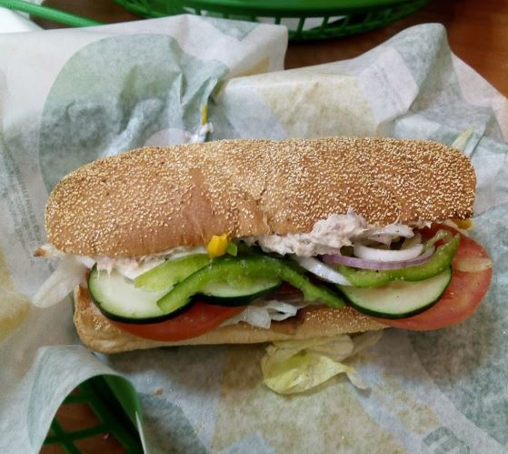
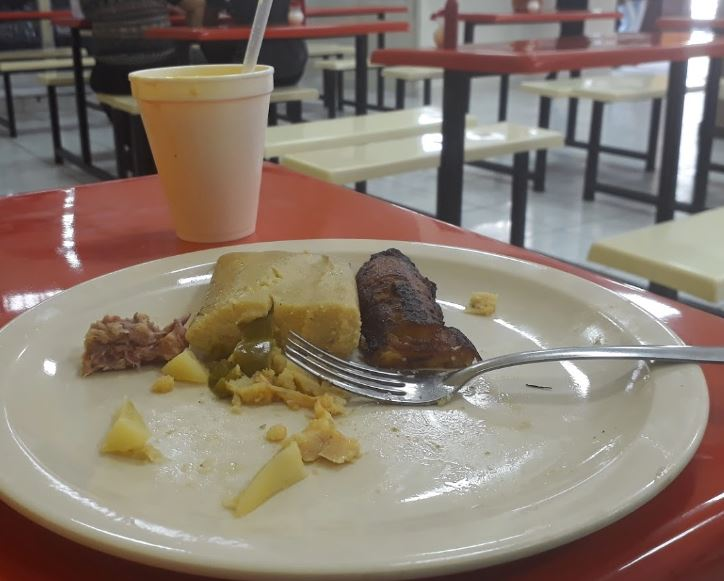
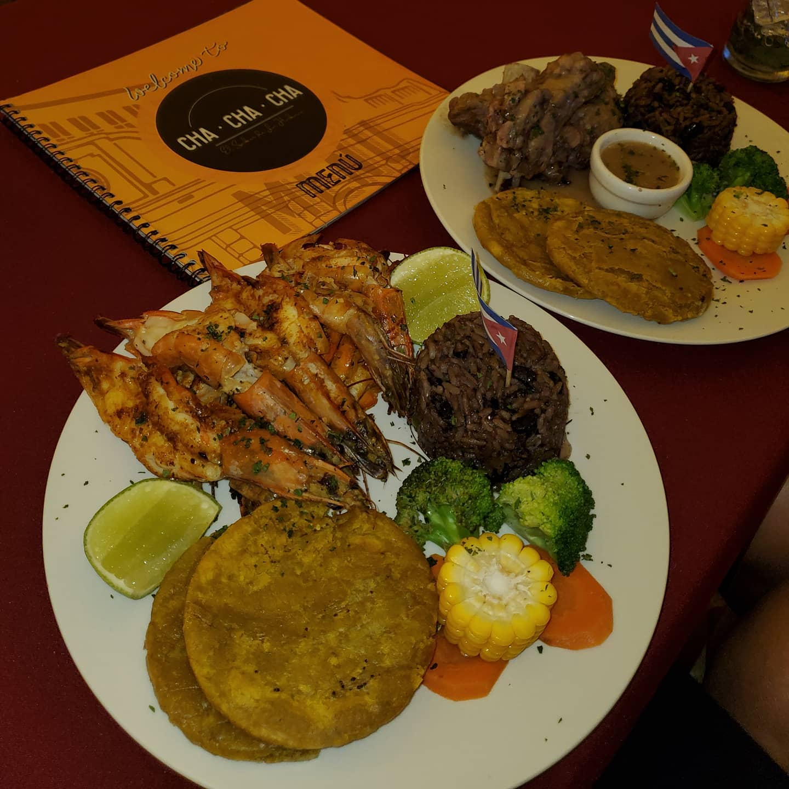
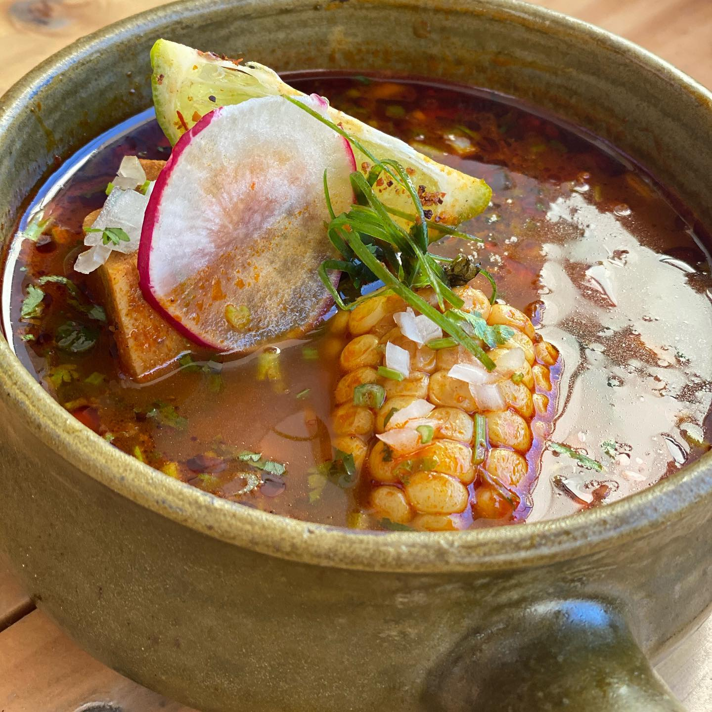
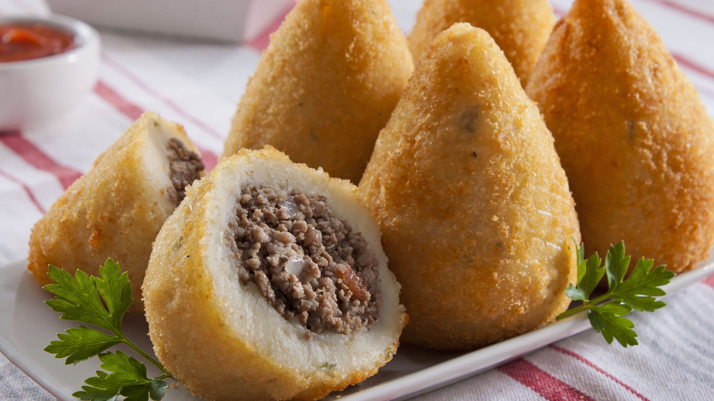

Subway Teatro Nacional

Restaurantes de comida rápida especializada en la elaboración de sándwich submarino y bocadillos, ensaladas y pizza por ración.
La Veintinueve

Restaurante especializado en comida casera y tradicional salvadoreña
Cha Cha Chá

Restaurante de Comida Cubana-Caribeña con un gran espectaculo nocturno
Pipiris Nais

El primer restaurante de fusión de comida mexicana y salvadoreña. ¡Entra a nuestra comunidad Mexiqueña unida por la gastronomía!
La Antena

Restaurante especializado en comida casera y tradicional salvadoreña
Restaurantes Brasileñas

El primer restaurante de fusión de comida Brasileña y salvadoreña. ¡Entra a nuestra comunidad Brasileña unida por la gastronomía!